Cloudflare：Zero Wire公告配图
Cloudflare上线漏洞调查入口
来源: Cloudflare Blog · 2026-11-04 · 原文链接
Cloudflare推出Zero Wire，把需要优先调查的互联网漏洞情报集中到Radar：条目给出受影响对象、处置线索、供应商公告和证据，并区分需要关注的项目与参考资料。它还附有用于只读环境评估的预制提示，帮助使用者结合自己的部署判断是否受影响；复制提示不等于系统已经扫描或修复。部分漏洞会列出可用的WAF缓解措施，但并非所有条目都有规则，临时缓解也不能代替补丁。公告发布于11月3日14:00 UTC。
Janet 锐评：
漏洞标题里最吓人的词，往往回答不了“我这台服务到底有没有事”。Zero Wire把产品版本、供应商证据和评估问题放在一起，至少缩短了从恐慌到调查的距离。它保留只读评估这一层也很务实：确认暴露面与动手修改之间，本来就有一次责任交接。入口好找，不代表每条漏洞都已经有现成解药。
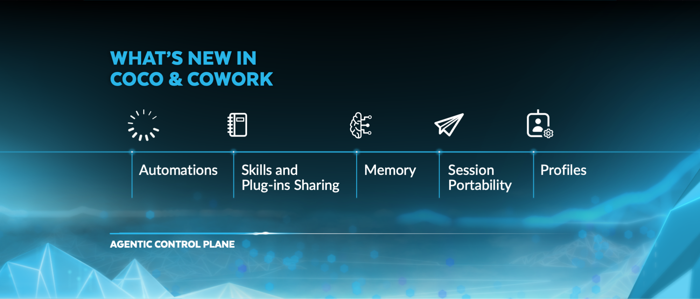
Snowflake：本次CoCo与CoWork功能公告图
Snowflake CoWork开放看板预览
来源: Snowflake Blog · 2026-11-04 · 原文链接
Snowflake在11月3日介绍CoWork的新功能：用户可以描述需求，由CoCo生成仪表板，再按角色分享；仪表板目前为公开预览。管理员可通过Profiles预设团队的模型、技能和连接器，Automations则承接定时任务。会话与自动任务仍受用户原有权限、行级访问和数据遮罩策略约束，预设配置并不扩大数据访问范围。
Janet 锐评：
业务同事终于有机会直接改看板，而不是排队请别人调整一张图。真正决定能否推广的，是分享之后谁能看到哪些行；这次公告把角色和数据遮罩写进使用路径，比单纯展示漂亮图表更有分量。
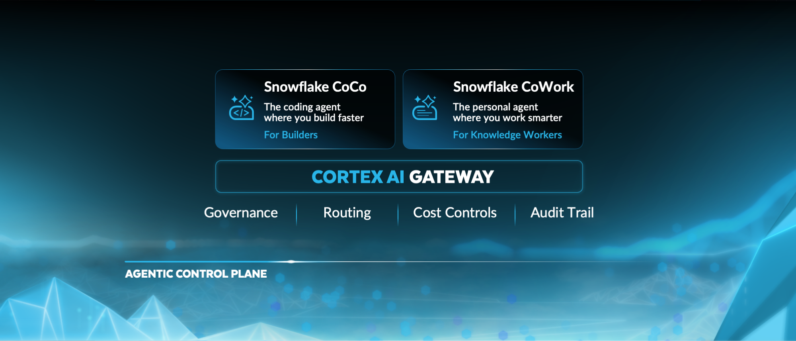
Snowflake：CoCo开发者与CoWork业务入口示意图
Snowflake CoCo接手长时开发任务
来源: Snowflake Blog · 2026-11-04 · 原文链接
同日，Snowflake介绍面向开发者的CoCo云会话：Cloud Agents在受控沙箱里运行长任务，支持子代理、实时应用预览，以及克隆仓库、建分支、提交和发起PR。定时、事件或webhook触发的Automations以创建者身份执行并保留运行记录。Cortex Agent SDK的Python与TypeScript客户端已正式可用；记忆与动态模型路由仍为公开预览。
Janet 锐评：
关掉电脑后任务还能继续，省下的是等待时间；留下一份可检查的PR，省下的才可能是返工时间。云会话越长，途中做过哪些决定、最终改了哪些文件，就越不能只靠最后一段聊天总结交代。
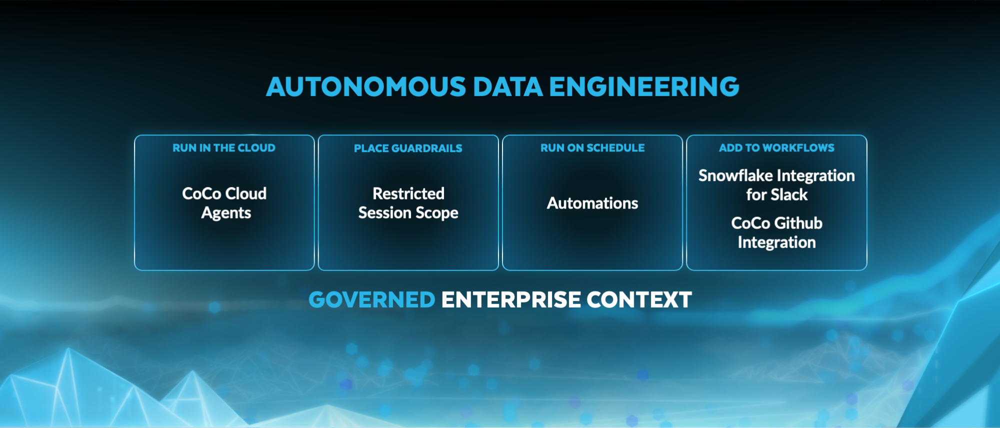
Snowflake：本次自主数据工程功能公告图
Snowflake扩展数据管道构建方式
来源: Snowflake Blog · 2026-11-04 · 原文链接
Snowflake的另一份当日数据工程公告确认：dbt Projects及其Slim CI、沿用生产环境对象的能力正式可用，DCM Projects也进入正式可用阶段。Pipeline Builder和Task Graph Object处于公开预览，DCM Test Branches仍是私有预览。它们分别服务于管道构建、任务编排和隔离测试，不能把一张功能清单全部理解为现在就可在生产环境启用。
Janet 锐评：
自动写一段转换SQL并不难，难的是测试时不碰坏生产表。dbt的精简持续集成与隔离测试分支，触到的是数据团队每天承担的具体代价；其中一些仍在预览，落地速度不能按发布会的节奏估计。
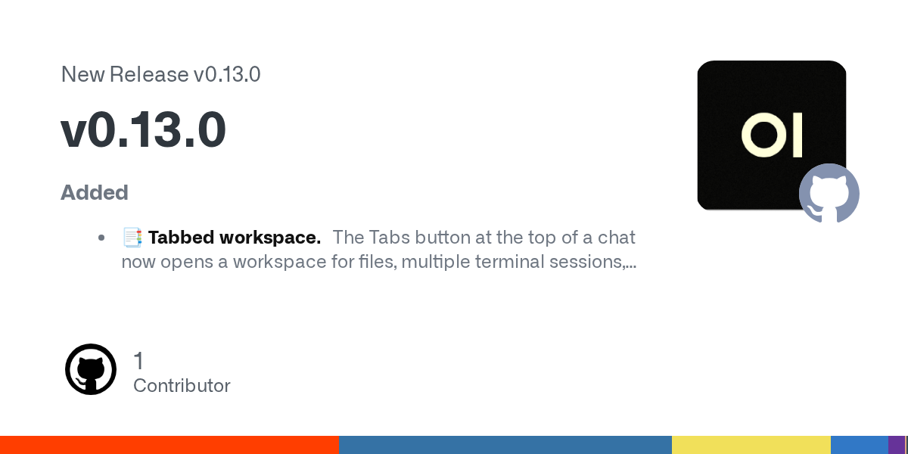
GitHub：v0.13.0官方版本发布卡片
Open WebUI加入多标签工作区
来源: Open WebUI / GitHub Release · 2026-11-04 · 原文链接
Open WebUI在11月3日发布v0.13.0。聊天旁的新标签工作区可并排容纳文件、终端、预览和评论，并支持拖动排序、创建文件及查看Git变更。Desktop标签可共享桌面操作，Browser标签可用于网页操作与测试，但两者都依赖具备相应能力的Open Terminal连接；单独更新WebUI不会自动获得一台可控桌面。
Janet 锐评：
聊天窗口旁边有文件、有终端，也有能自己接手的桌面，终于接近实际干活时的桌子。对自托管用户而言，安装前最容易漏掉的恰恰是那条连接要求：界面按钮出现，与后面的运行环境准备好，是两回事。
Sarvam AI：Prism原文主图
Sarvam Prism用一次前向做选择
来源: Sarvam AI / Hugging Face · 2026-11-04 · 原文链接
Sarvam发布Prism权重与技术介绍，仓库实际发布提交为11月3日13:16 UTC。它是基于Sarvam 105B-10B的LoRA微调版，面向有限选项的决策，一次前向计算各选项概率，不必逐词生成回答。作者报告B200上中位延迟44毫秒，并在其25个模型对照中给出71.8的平均成绩；这些属于作者测试。权重为Apache 2.0，FP8部署仍要求至少约120GB显存的GPU，且目前仅处理文本。
Janet 锐评：
许多业务问题只需从几个合法选项里挑一个，长篇解释反而增加延迟。Prism把输出收紧到概率，有明确用处；但一次前向并不等于一张消费级显卡，105B级底座的部署门槛仍然摆在那里。
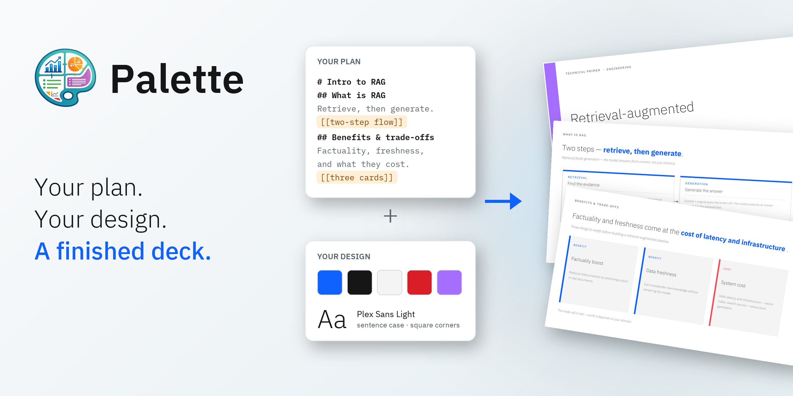
IBM Research：Palette技术介绍配图
IBM微调20B模型生成可检查幻灯片
来源: IBM Research / Hugging Face · 2026-11-04 · 原文链接
IBM Research在当天首次发表Palette技术介绍：一个20B模型的LoRA适配器分别承担设计者与编码者角色，先输出可编辑的JSON简报，再逐页生成pptxgenjs代码。团队合成约1000套、1万页训练幻灯片；生成后渲染测量重叠、裁切与溢出，仅在检查改善时保留编辑模型的修订。作者报告它在PresentBench三个领域的平均得分排第二，但这不代表所有演示场景。本文介绍训练方法与结果，未据此确认当日新增可下载权重。
Janet 锐评：
做幻灯片最折磨人的，常常不是缺一句文案，而是标题盖住了图、表格多编了一行。Palette把编辑决定和几何摆放拆开，再让程序实际测量，抓住了很具体的返工来源。我喜欢“改好才收下”这条规则；它只对检查器覆盖的错误负责，仍然不能替人判断一页讲得是否清楚，更不能担保没被检查到的事实。
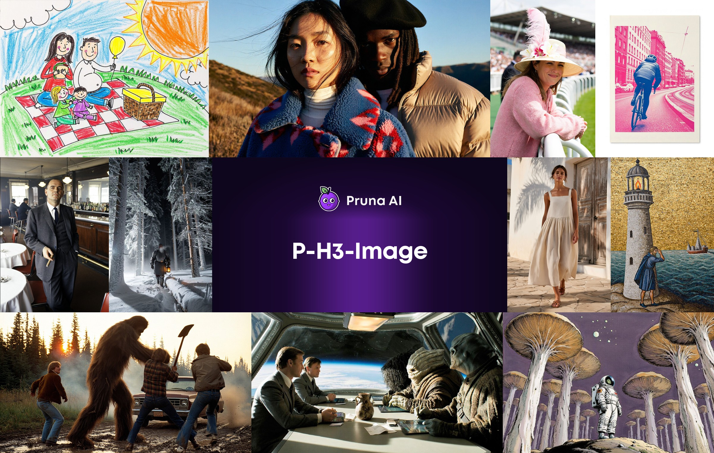
Pruna AI：该衍生图像模型的官方生成示例拼图
P-H3转换版更新ComfyUI原生工作流
来源: Pruna AI / Hugging Face · 2026-11-04 · 原文链接
Pruna在11月3日15:55 UTC更新P-H3-Image的ComfyUI转换版工作流，改用ComfyUI原生支持。它是既有MiniMax-H3衍生图像模型的工作流更新，基础模型和权重较早，不能写成当天新基础模型。作者给出8MP、8步生成示例；最小w4a8组合下载约20GB、峰值显存约21GB，量化会改变部分细节。许可并非无限制商用：美国、欧盟、英国与韩国等区域须另获许可，并有产品署名要求。
Janet 锐评：
21GB显存让这套衍生模型接近部分个人工作站的容量，但还远没有轻到随手运行。更容易踩坑的是地域许可：文件可以下载与产品可以在目标市场销售，中间隔着模型卡已经写明的条件。
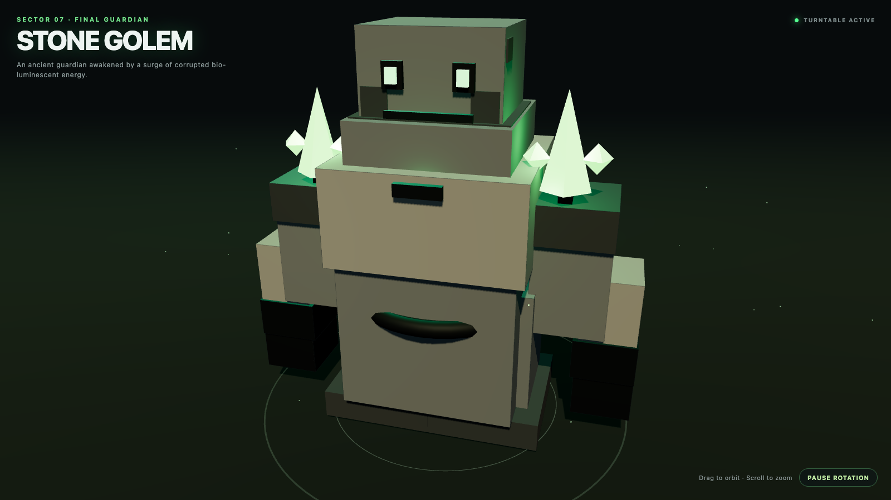
发布者自报：该转换模型生成并渲染的石头傀儡示例
社区量化3D Coder支持苹果端运行
来源: mlx-community / Hugging Face · 2026-11-04 · 原文链接
mlx-community当天上传Qwen3.5-4B-3D-Coder的OptiQ 4bit混合精度量化版，来源是ccore的3D代码独立微调模型，并非Qwen官方新基础模型。发布者在24GB M4机器上自报约26 token/s、峰值内存4–6GB，文件约3.7GB。其18次尝试中11次完成渲染、3次加载崩溃、4次陷入推理循环；示例经过挑选，且未提供与原精度模型的能力对照。
Janet 锐评：
模型卡愿意把七次失败也列出来，比一排精挑细选的3D成品更能帮助判断。它已经提供一个本地实验入口；11次成功的结果，还不足以承诺稳定接单，更不能反推量化前后质量没有损失。
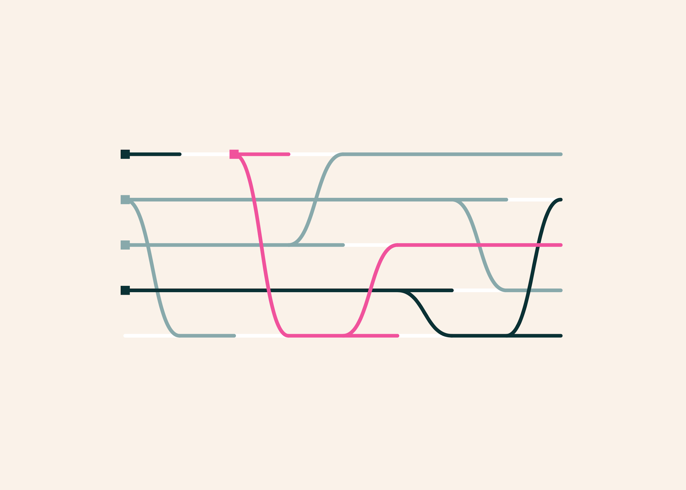
AllenAI：StateBench状态变化示意图
StateBench测试长文状态追踪失误
来源: AllenAI / Hugging Face · 2026-11-04 · 原文链接
AllenAI当天发布StateBench的新分析，基础数据与研究较早。测试要求模型从长文中追踪最新赋值、自更新和跨变量引用，而非只找出某句原文。作者报告，在高难度长序列设置中，所测前沿模型的最终状态准确率不超过13%。在专门训练的275M小模型实验里，采用GatedDeltaNet的混合架构比纯Transformer更能外推长序列；不过实验使用固定变量，不能据此证明它已解决真实任务中新对象不断出现的记忆问题。
Janet 锐评：
客户先改地址，再撤回订单，最后又只恢复其中一件商品：记录全在，并不代表当前状态已经算对。StateBench把“能找到旧话”与“能更新事实”拆开测，正好戳到长对话的软肋。13%来自特定高难测试，不能拿来概括所有聊天；但它足以提醒我们，长上下文长度从来没有附赠一份准确的业务账本。
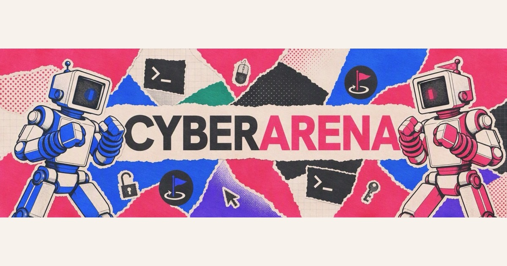
2077 AI Data Foundation：CyberArena原文配图
CyberArena用真实服务检查攻防结果
来源: 2077 AI Data Foundation / Hugging Face · 2026-11-04 · 原文链接
2077 AI Data Foundation当天介绍CyberArena：两名代理各自维护相同服务，在三轮、每轮20分钟的比赛里同时攻击对手并修补自己，结果结合外部健康检查判定。作者在40个挑战、12个模型、466场比赛上报告结果，并在行为分析中发现23%的未验证修复声明和21%的不完整修补。统计来自作者的受控评估，不等于模型能在真实企业网络中自主防御。
Janet 锐评：
“已修复”是聊天记录里的一个句子，服务是否还会被打穿则是另一件事。让外部检查器判定结果，至少阻止了模型靠措辞给自己加分；比赛环境与真实值班之间，还有系统复杂度和误操作代价的距离。
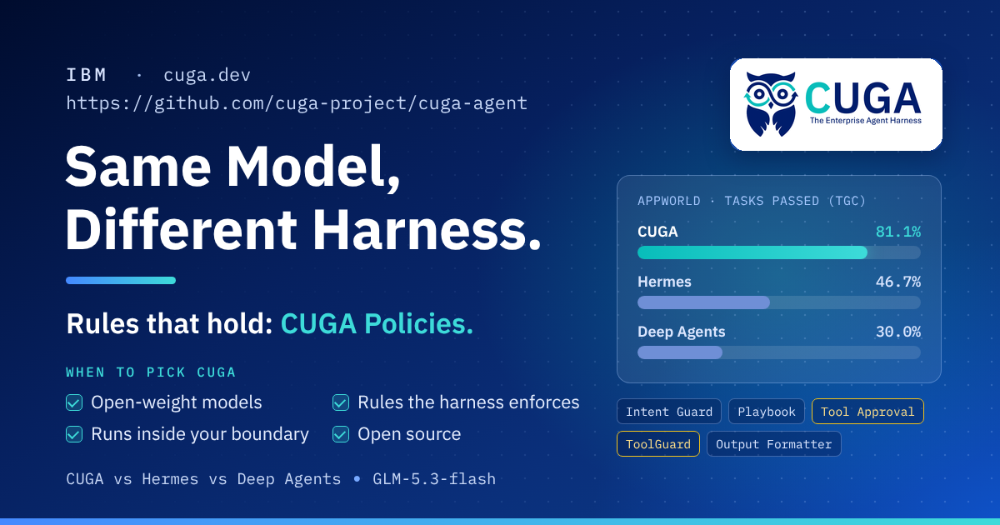
IBM Research：本次CUGA框架对照文章配图
IBM实测同模型更换框架后的差距
来源: IBM Research / Hugging Face · 2026-11-04 · 原文链接
IBM Research在当天新分析中用同一GLM-5.3-flash模型比较CUGA、Hermes与Deep Agents，覆盖AppWorld的90项任务。作者自测任务完成率依次为81.1%、46.7%、30%；CUGA用了针对AppWorld的配置，其他框架的设置并不完全对等。因此结果说明框架与任务适配会改变表现，不能推出通用优胜排名。这组对照也没有启用策略规则，不能拿完成率证明支付审批等规则已经有效。
Janet 锐评：
同一模型从30%到81%的跨度很抢眼，配置不对等的注脚同样关键。给任务专门准备过的框架获胜，证明的是准备工作有价值；把这个结果写成其他框架不行，反而会错过实验真正能说明的部分。
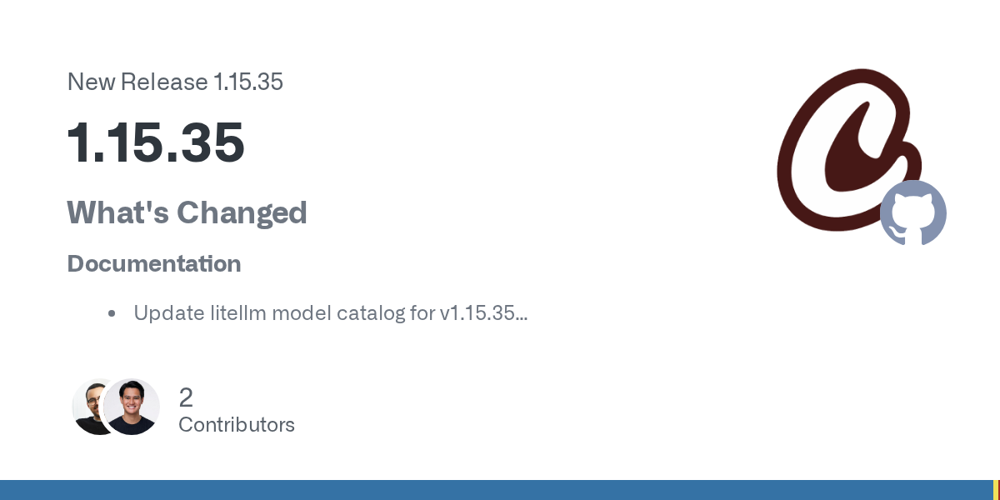
GitHub：CrewAI 1.15.35官方发布卡片
CrewAI发布模型目录维护版本
来源: CrewAI / GitHub Release · 2026-11-04 · 原文链接
CrewAI于11月3日18:25 UTC发布1.15.35。官方变更仅列出LiteLLM模型目录更新，以及补充1.15.34的快照和变更记录，属于文档与目录维护。公告没有提供执行性能、代理推理或工具权限能力的新增证据，不应把版本号变化写成全套运行能力提升。
Janet 锐评：
版本公告只有两项文档变更，新闻也就只讲到这里。维护模型目录能减少接入时的误判，却不会凭空改善代理完成任务的能力。把维护工作按它本来的规模记录下来，反倒更尊重使用者的时间。
今日核心预测
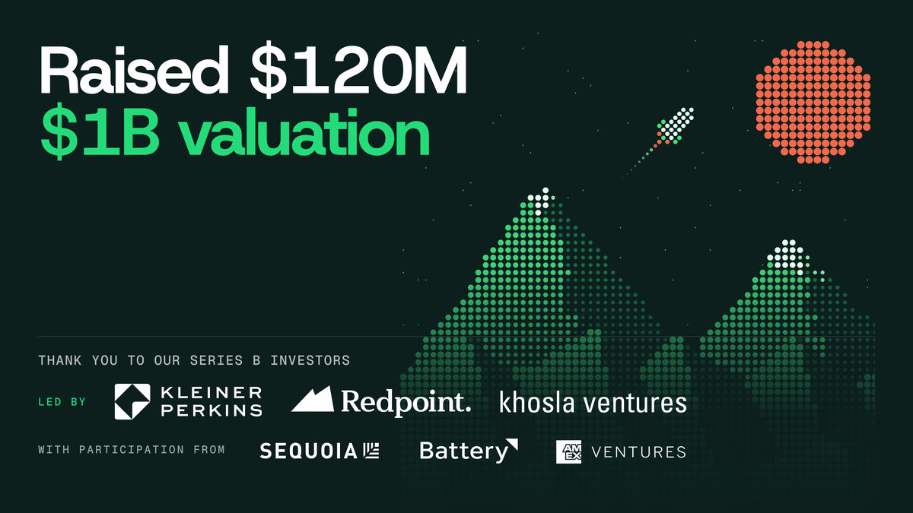
Traversal：本次B轮金额与估值公告图
Traversal融资1.2亿美元做AI运维
来源: Traversal · 2026-11-04 · 原文链接
Traversal于11月3日宣布完成1.2亿美元B轮融资，估值10亿美元，Kleiner Perkins、Redpoint和Khosla Ventures共同领投，Sequoia等继续参与。公司主打AI站点可靠性工程：结合生产系统数据，提出并检验故障原因，而非只生成一段看似合理的日志解释。它自报每月调查量从513次增至近7.3万次，但调查次数不等于已成功消除的事故数，也没有在这份公告中给出独立对照结果。
Janet 锐评：
月调查量涨到近7.3万次，首先说明系统被频繁调用，还没有说明值班工程师少熬了多少夜。运维产品最动人的承诺是减少定位故障时的盲查；最昂贵的失误则是自信地指错原因。Traversal要证明的差额，应落在定位时间、修复结果与误报成本上，融资规模只能为这场验证提供更长的跑道。
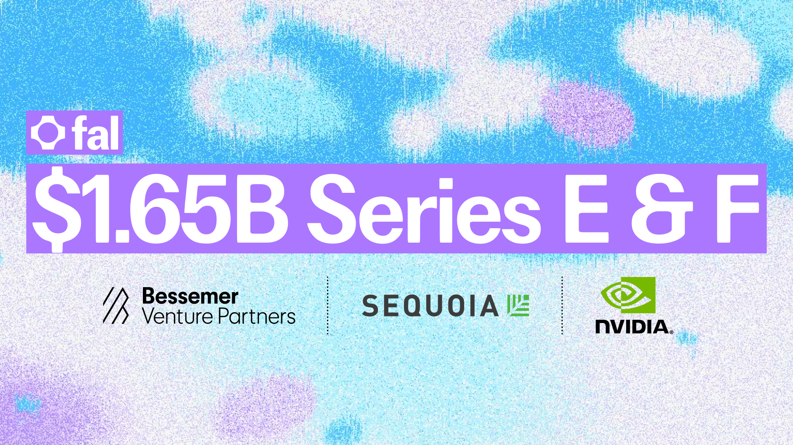
fal：本次E轮与F轮披露文章主图
fal披露16.5亿美元两轮融资
来源: fal · 2026-11-04 · 原文链接
fal在11月3日上线的公司文章中同时披露E轮与F轮融资，公告配图标注两轮合计16.5亿美元。E轮较早在年内完成，由Sequoia领投；当天宣布的F轮由Bessemer Venture Partners领投，NVIDIA继续投资。资金将支持2027年的推理容量、研究与团队扩张。原始公告未分别列出各轮金额及估值，也不能把较早完成的E轮写成当天才发生的融资。
Janet 锐评：
广告和影视团队真正交片时，调用量会集中在赶工的几个小时。fal把资金同时投向推理容量与研发，解释了融资背后的实际支出方向；两轮合计的大数字说明资金体量，却没有单独回答每轮交易的价格。
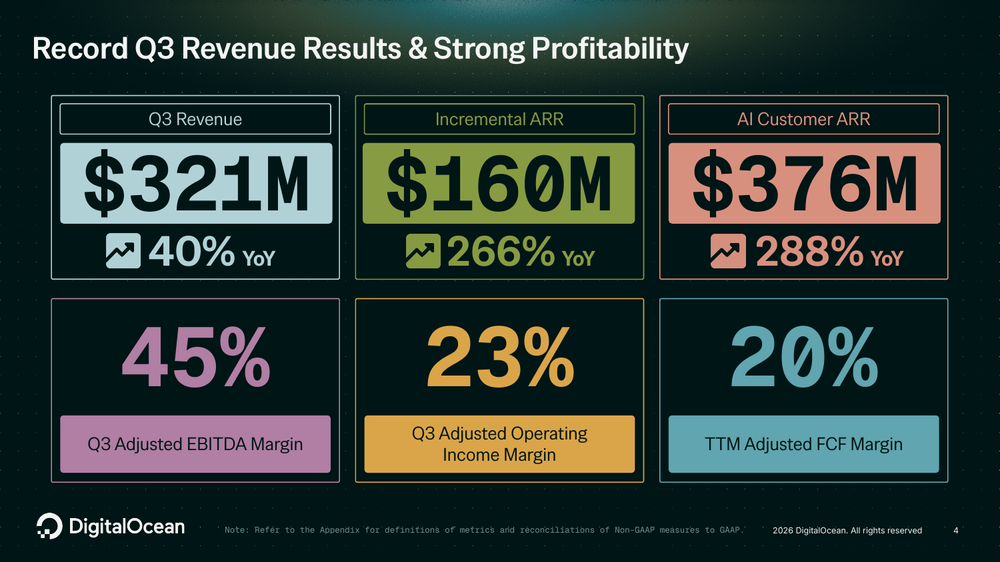
DigitalOcean：本次Q3业绩演示文档第4页
DigitalOcean季报营收同比涨40%
来源: DigitalOcean Investor Relations · 2026-11-04 · 原文链接
DigitalOcean在11月3日新披露第三季度财报：收入约3.21亿美元，同比增长40%；AI客户年化收入运行率为3.76亿美元，同比增长288%。这一口径把使用AI产品的客户全部收入计入，并以当季收入乘四，不是单季AI推理收入。公司同时录得归属普通股股东净亏损约4300万美元，包含5700万美元票据转换费用。基础业务发生在此前季度，本条报道的是当天新增财务披露。
Janet 锐评：
3.76亿美元的AI客户指标很亮眼，定义却决定它能说明什么：买了AI产品的客户，普通云服务消费也算进去。这个增长支持客户采用更多产品的判断，仍不能单凭它推算推理业务规模，更不能直接当作利润。